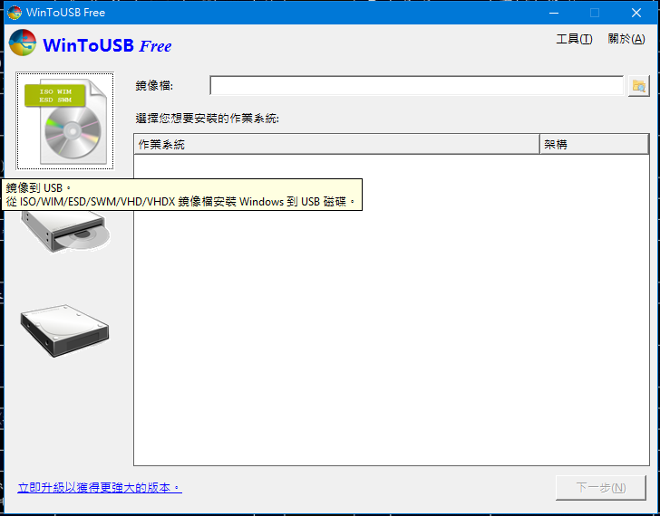
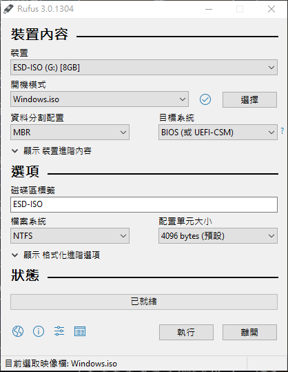
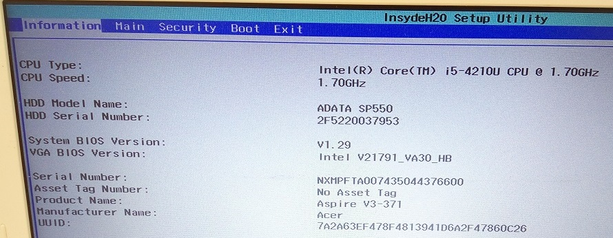
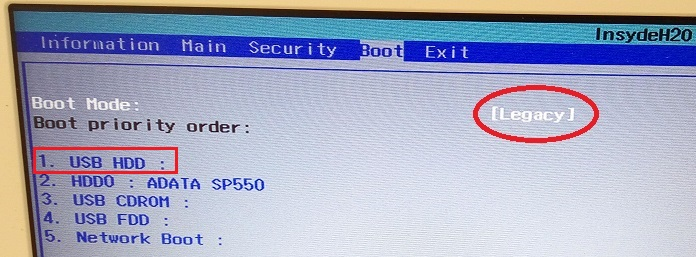
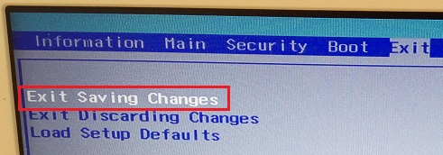
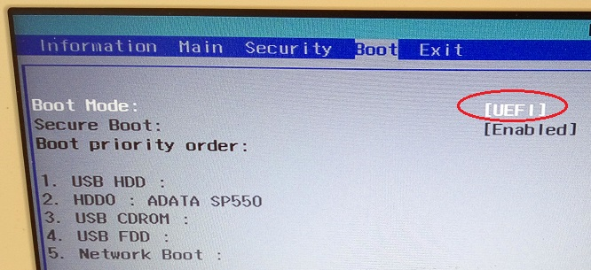
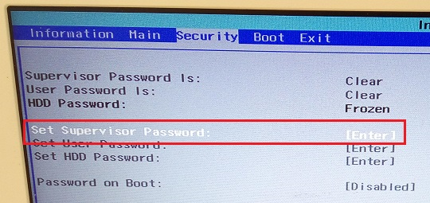
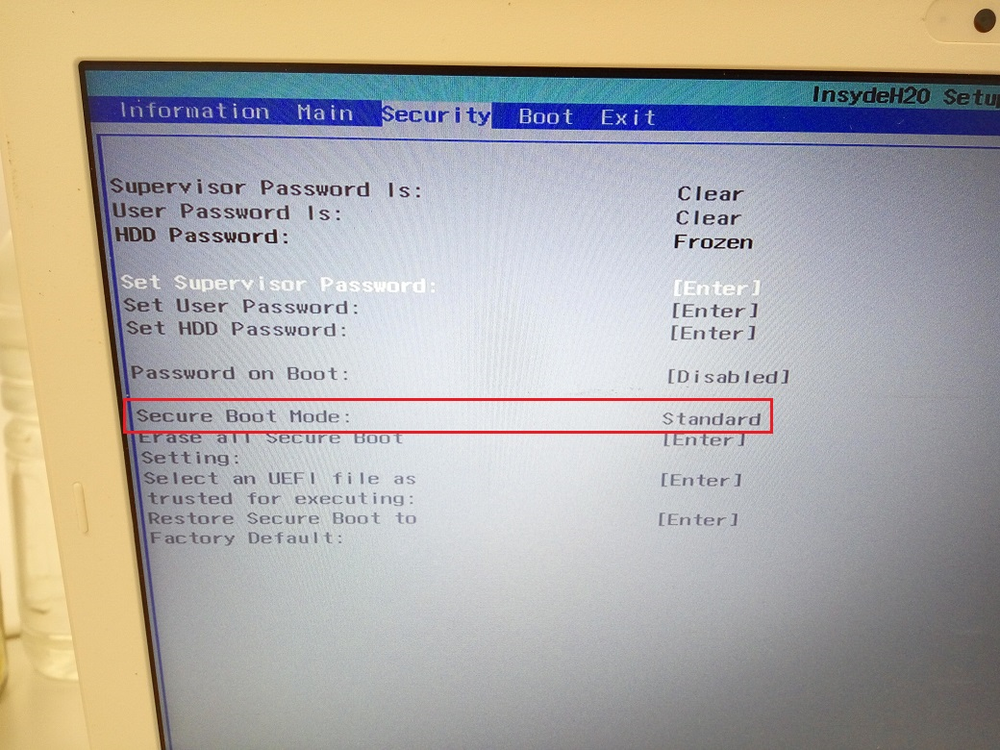

USB開機、筆電重灌步驟簡述，以ACER V3-371-50BW筆電為例
以前筆電大都附有光碟機，如果要做作業系統重灌，
其重灌流程跟桌電無異倒不成問題，
但是現在筆電大家(我也是)都想買輕薄筆電勢必不會附上光碟機，
用的時候很爽，但是有一天想要重灌時沒光碟機就要傷腦筋了，
輕薄型筆電重灌方式不外乎有
| 優點 | 缺點 | 約10年前推薦順序 | 現在推薦順序 | |
| USB外接光碟機 | 方便、無相容性問題 | 額外花錢、早期很貴 | 2 | 2 |
| 內接光碟機+SATA to USB轉接器 | 便宜 | 些許SATA to USB相容性問題 | 1 | 3 |
| USB隨身碟 | 方便、安裝最快速 | 早期USB開機不易、設定繁雜 | 3 | 1 |
早期，外接光碟機很貴，如果你有錢的話當然可以直接買一台，
而使用筆電可能沒有提供USB隨身碟重灌或是設定繁雜失敗率很高，
只有使用內接光碟機+SATA to USB轉接器才是比較划算的。
而現在，USB外接光碟機也很便宜也推薦買一台來裝，
但更推薦使用USB隨身碟來重灌筆電，因為最便宜最快，
但還需要注意相關設定，所以寫一篇文章來作日後設定參考。
一、製作USB開機安裝碟
Windows USB/DVD Download Tool與Rufus我都有試過皆可以製作USB開機安裝碟，
但Windows USB/DVD Download Tool比較簡單幾乎不用作什麼設定，
通常按下一步、下一步就製作完成了，
額外一提，Windows USB/DVD Download Tool似乎只能使用原版未修改的windows鏡像檔
來製作USB開機碟，對於想製作修改過的，如Windows PE的USB開機碟，則會失敗。
那我建議我成功用過的WinToUSB，操作界面也非常簡單，
他連修改過的windows鏡像檔，也可成功製作成USB開機碟。

註：2018/02/09 發現最新版的 WinToUSB v3.9 在製作windows 10 usb安裝碟的過程上，有bug會跳出USB容量不足的訊息，
因而導致製作失敗，我現改以 Rufus v2.18 軟體來製作就成功了。
Rufus v3.0 參數設定畫面

當你使用 Rufus 來製作 usb 安裝碟，隨身碟插好、iso 檔選好後，
參數設定如上圖，設定好後再按「執行」按紐開始製作 usb 安裝碟即可。
二、設定USB開機
當做完USB開機安裝碟時，基本上就可以把他當作一片安裝光碟，
然後於BIOS設定「USB開機」就好了，但事與願違就是讀不到USB開機安裝碟。
以我的ACER V3-371-50BW筆電為例，
啟動模式(Boot Mode)有分「UEFI主機板開機」與「BIOS主機板開機」，
如果要使用「UEFI主機板開機」則可能需要停用Secure Boot才能順利開機，
1、而我是使用「BIOS主機板開機」，設定如下：
(1)、首先於剛開機時按「F2」，進入主機板設定畫面。

(2)、於啟動模式(Boot Mode)選擇Legacy，並於啟動順序(Boot priority order)將USB HDD放在第一順位。

因為我還沒插隨身碟，如果有插的話，則會顯示該型號。
(3)、最後別忘了存檔，重開機後應可USB開機安裝碟。

2、UEFI主機板開機
我還未去試「UEFI主機板開機」，不過使用「UEFI主機板開機」我想注意要點有：
(1)、於啟動模式(Boot Mode)選擇UEFI

(2)、於Security選單，要先設定Set Supervisor Password才能再設定其他項目。

(3)、然後停用Secure Boot，下圖中該選項我無法選擇，也許是哪個細節我漏掉了。

詳細請參考UEFI主機板關閉Secure Boot
參考資料：